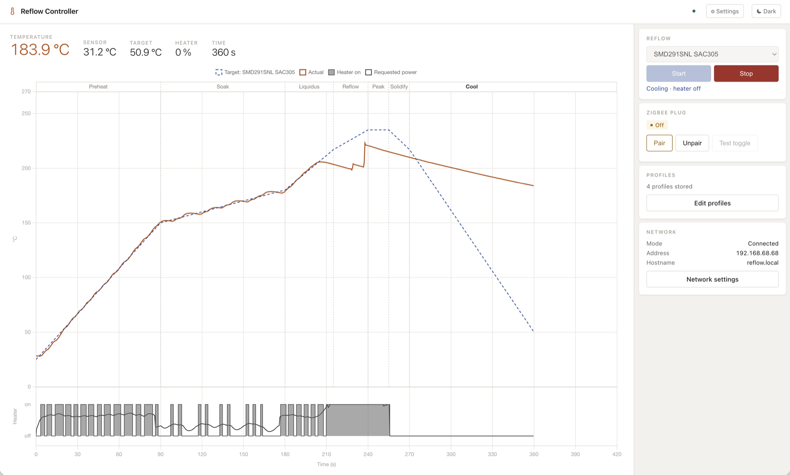

Reflow Soldering on a Clothes Iron
Surface-mount boards are soldered by reflow: the board is heated along a profile — a preheat ramp, a soak, a short peak above the solder's melting point, then cooling. This project turns an old clothes iron upside down into a hotplate. An ESP32-C6 reads the soleplate with a contactless MLX90614 infrared sensor and switches the iron through an off-the-shelf Zigbee smart plug, so no mains wiring is needed. A model-based feedforward and PI controller follows the profile to within about 1–2 °C, even though the plug may only switch every two seconds and its radio replies are often lost to Wi-Fi. The web interface shows the run live — profile, temperature, phase and heater — and new firmware installs over Wi-Fi from GitHub releases.
